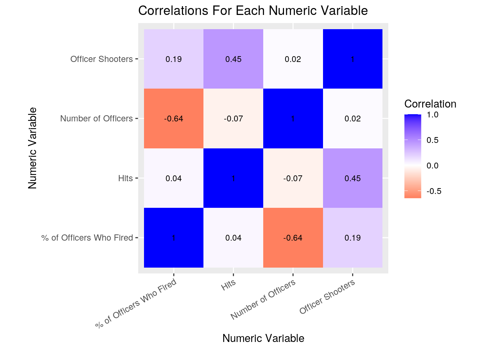
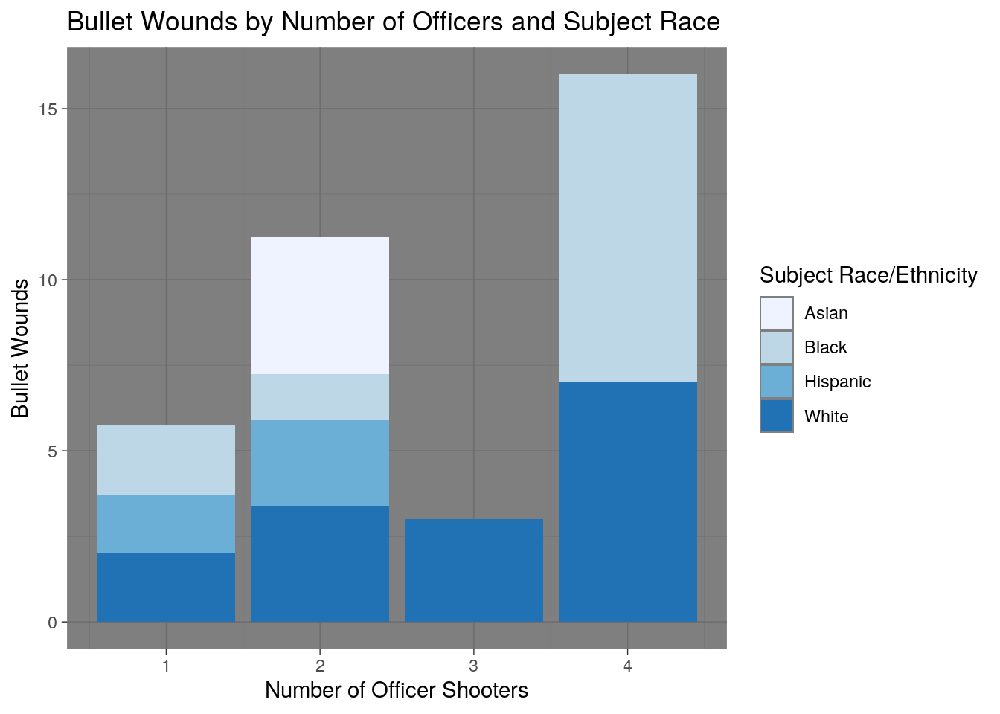
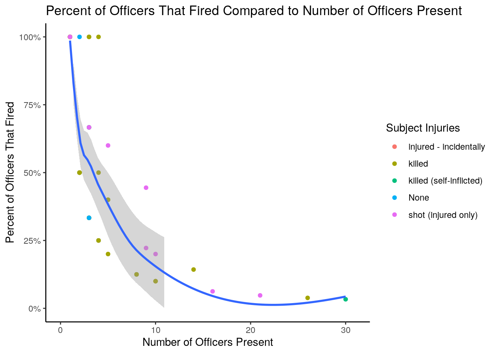
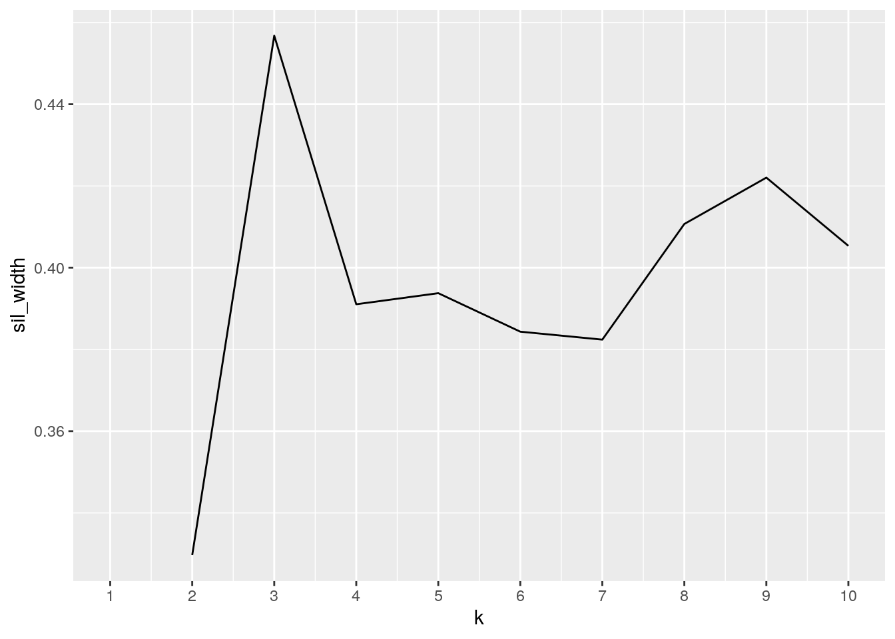
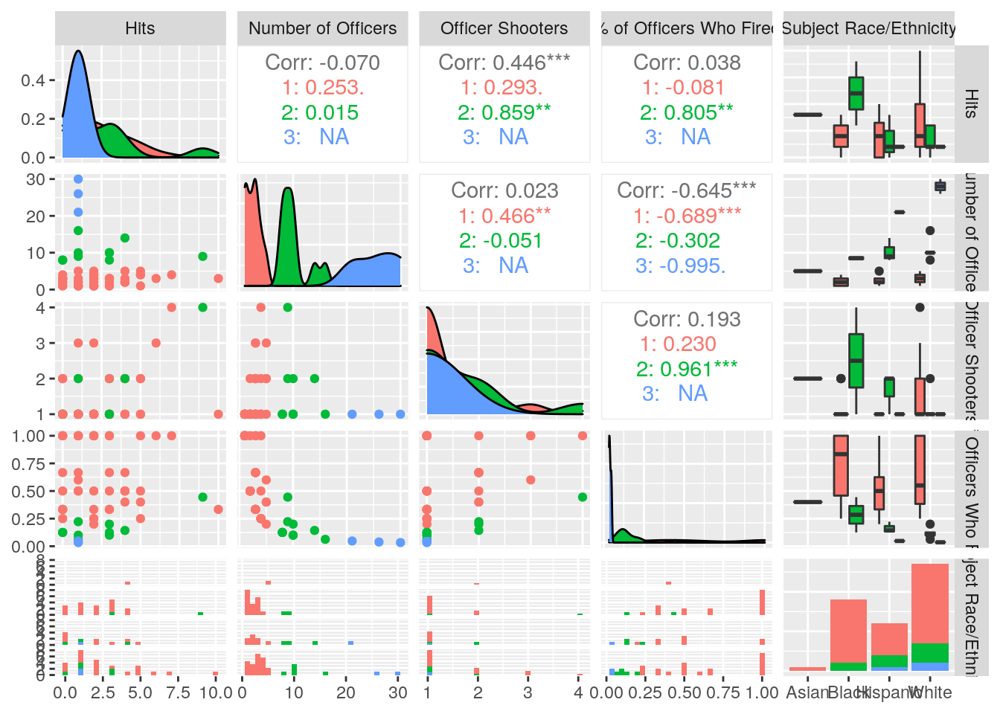
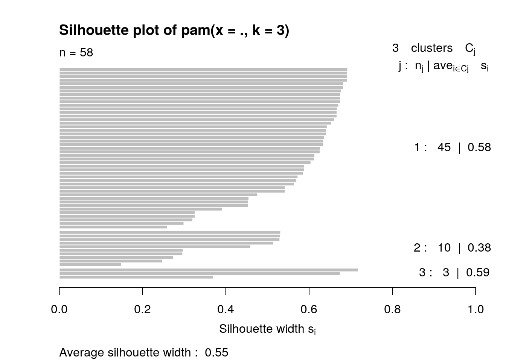
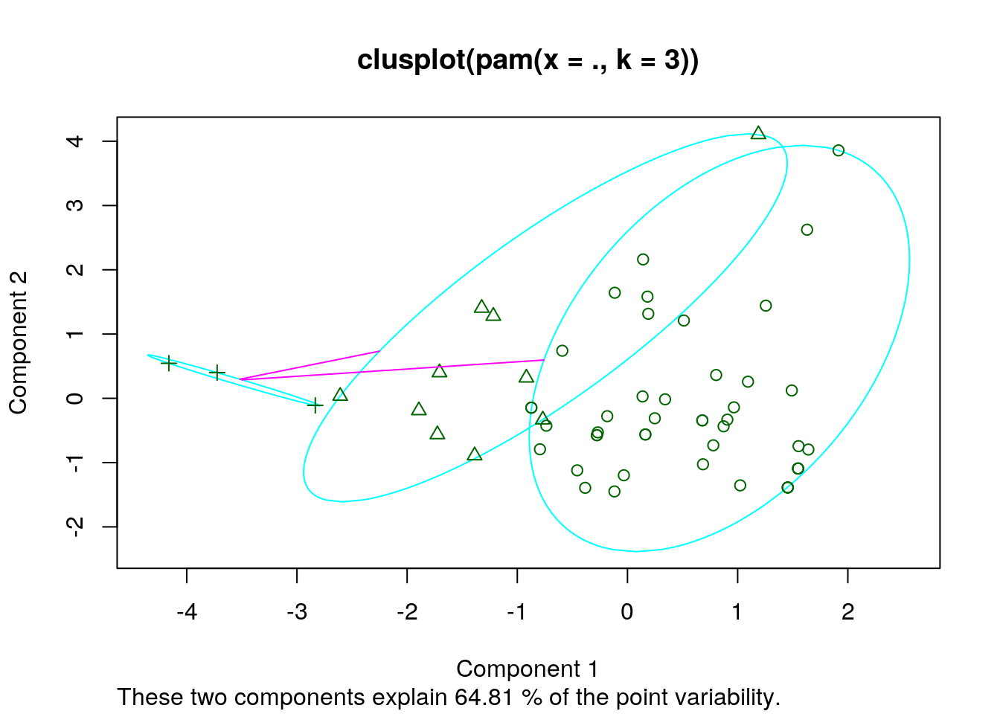

# Reading in Data
Shoot <- read.csv("2008-17_OIS_Subjects.csv")
Rep <- read.csv("Officer_Involved_Shootings_2008-17_Incidents.csv")
Shootings <- as.data.frame(Shoot)
Reports <- as.data.frame(Rep)The two datasets I decided to use for this project were found using Data.gov, I discovered them by searching the keywords “police shootings” as I supposed it would make for interesting data. I found a dataset containing information about officers involved in shootings in Austin, Texas between 2008 and 2017, and found a separate dataset containing subjects involved in shootings in Austin during an identical time frame. I downloaded the dataset.csv for each and read them into my environment. While exploring the two datasets I quickly realized they each contained different information about the same exact shootings. Both datasets included the variables: case number, date, and location. The dataset “2008-17_OIS_Subjects.csv” (denoted as “Shootings” in this .rmd) included information about the subjects involved in the shooting, containing the variables: subject race, subject gender, and subject injuries. The dataset “Officer_Involved_Shootings_2008-17_Incidents.csv” included much more information, it was about the same cases but was based on more detailed police reports. This “Reports” dataset included the following variables: day of the week, time, premise catagory (type of location), “less than lethal force used by APD prior to shooting (whether or not police attempted to prevent the incident via non-lethal methods)”, subject weapon, number of officer shooters (number of officers who fired their weapon), call type categories (reason for 911 call that brought officers to the scene), officers present when shots fired (amount of officers who were present at the time of the shooting), and hits (amount of times the subject was shot). When I realized only one of the datasets (Shootings) included demographic information about the subjects, I became very intrigued about potential associations that I might find after joining. I tentatively expected that whiteness of subjects would be correlated with a lower amount of present officers, amount of officers who fired, and amount of hits.
Link to dataset source: https://catalog.data.gov/dataset/2008-17-ois-subjects & https://catalog.data.gov/dataset/officer-involved-shootings-2008-17-officers
# Joining the datasets
library(tidyverse)
ProjectData <- left_join(Reports, Shootings, by = "Case..")
ProjectData2 <- ProjectData %>% na.omit
ProjectData3 <- ProjectData2 %>% select(-Location.1.y, -Date.y) %>%
mutate(Location = Location.1.x, Date = Date.x, Hits = X..Hits,
`Number of Officers` = X..Officers.Present.When.Shots.Fired,
`Case Number` = Case.., `Officer Shooters` = Number.of.Officer.Shooters) %>%
mutate(`% of Officers Who Fired` = Number.of.Officer.Shooters/`Number of Officers`,
`Day of Week` = Day.of.Week, `Premise Category` = Premise.Category,
`Non-Lethal Prevention Attempt` = Less.Lethal.Force.used.by.APD.prior.to.shooting.,
`Subject Weapon` = Subject.Weapon, `Call Type Category` = Call.Type.Categories,
`Subject Race/Ethnicity` = Subject.Race.Ethnicity, `Subject Gender` = Subject.Gender,
`Subject Injuries` = Subject.Injuries)
ProjectData3 <- ProjectData3 %>% select(-Location.1.x, -Date.x,
-X..Hits, -X..Officers.Present.When.Shots.Fired, -Case..,
-Number.of.Officer.Shooters, -Subject.Weapon, -Call.Type.Categories,
-Subject.Race.Ethnicity, -Subject.Gender, -Subject.Injuries,
-Subject.Weapon, -Less.Lethal.Force.used.by.APD.prior.to.shooting.,
-Premise.Category, -Day.of.Week) %>% arrange(`Case Number`)To join the two datasets I used a left join, keeping all of the information in the “Reports” dataset and joining the demographic data in the “Shootings” dataset by matching case number (common variable = case number). I used the left join so that only data in rows with a matching case number would be added, then used na.omit() to drop one case that was in the “Reports” dataset and not in the “Shootings” dataset to remove the NAs. Afterwhich, I mutated the variables to change their names to make them easier to read and use in my code. I followed this by using the select filter to remove the old column names. I then used the mutate function to create a new variable which I called “% of Officers Who Fired” by dividing the “Officer Shooters” by the “Number of Officers”. The result was a numeric variable of the ratio of present officers who fired their weapon. I then arranged my already tidy “projectdata3” dataset by case number, which also placed the data in chronological order (date and time). My joined dataset was then ready to be explored.
# Summary Statistics
SummaryStats <- ProjectData3 %>% summarize_if(is.numeric, list(Mean = mean,
Min = min, Max = max, Sd = sd, Var = var)) %>% pivot_longer(contains("_")) %>%
separate(name, into = c("Variable", "Statistic"), sep = "_") %>%
print## # A tibble: 20 x 3
## Variable Statistic value
## <chr> <chr> <dbl>
## 1 Hits Mean 2.36
## 2 Number of Officers Mean 5.05
## 3 Officer Shooters Mean 1.40
## 4 % of Officers Who Fired Mean 0.532
## 5 Hits Min 0
## 6 Number of Officers Min 1
## 7 Officer Shooters Min 1
## 8 % of Officers Who Fired Min 0.0333
## 9 Hits Max 10
## 10 Number of Officers Max 30
## 11 Officer Shooters Max 4
## 12 % of Officers Who Fired Max 1
## 13 Hits Sd 2.19
## 14 Number of Officers Sd 5.93
## 15 Officer Shooters Sd 0.748
## 16 % of Officers Who Fired Sd 0.344
## 17 Hits Var 4.80
## 18 Number of Officers Var 35.2
## 19 Officer Shooters Var 0.559
## 20 % of Officers Who Fired Var 0.118StatsByGroup <- ProjectData3 %>% group_by(`Subject Race/Ethnicity`) %>%
summarize_if(is.numeric, list(Mean = mean, Min = min, Max = max,
Sd = sd, Var = var)) %>% pivot_longer(contains("_")) %>%
separate(name, into = c("Variable", "Statistic"), sep = "_") %>%
print## # A tibble: 80 x 4
## `Subject Race/Ethnicity` Variable Statistic value
## <fct> <chr> <chr> <dbl>
## 1 Asian Hits Mean 4
## 2 Asian Number of Officers Mean 5
## 3 Asian Officer Shooters Mean 2
## 4 Asian % of Officers Who Fired Mean 0.4
## 5 Asian Hits Min 4
## 6 Asian Number of Officers Min 5
## 7 Asian Officer Shooters Min 2
## 8 Asian % of Officers Who Fired Min 0.4
## 9 Asian Hits Max 4
## 10 Asian Number of Officers Max 5
## # … with 70 more rowsStatsBy2Groups <- ProjectData3 %>% group_by(`Subject Race/Ethnicity`,
`Subject Gender`) %>% summarize_if(is.numeric, list(Mean = mean)) %>%
pivot_longer(contains("_")) %>% separate(name, into = c("Variable",
"Statistic"), sep = "_") %>% print## # A tibble: 24 x 5
## # Groups: Subject Race/Ethnicity [4]
## `Subject Race/Ethnicit… `Subject Gender` Variable Statistic value
## <fct> <fct> <chr> <chr> <dbl>
## 1 Asian Male Hits Mean 4
## 2 Asian Male Number of Officers Mean 5
## 3 Asian Male Officer Shooters Mean 2
## 4 Asian Male % of Officers Who F… Mean 0.4
## 5 Black Female Hits Mean 1
## 6 Black Female Number of Officers Mean 2
## 7 Black Female Officer Shooters Mean 1
## 8 Black Female % of Officers Who F… Mean 0.667
## 9 Black Male Hits Mean 2.5
## 10 Black Male Number of Officers Mean 2.81
## # … with 14 more rowsStatsWhenSubjectHasGun <- ProjectData3 %>% filter(`Subject Weapon` ==
"gun") %>% summarize_if(is.numeric, list(Mean = mean)) %>%
pivot_longer(contains("_")) %>% separate(name, into = c("Variable",
"Statistic"), sep = "_") %>% print## # A tibble: 4 x 3
## Variable Statistic value
## <chr> <chr> <dbl>
## 1 Hits Mean 1.90
## 2 Number of Officers Mean 5.52
## 3 Officer Shooters Mean 1.38
## 4 % of Officers Who Fired Mean 0.477cormatrix <- ProjectData3 %>% select_if(is.numeric) %>% cor(use = "pair")I created summary statistics with the summarize() function (mean, max, min, standard deviation, and variation) for my entire joined dataset, I then used pivot_longer() to place the statistics in an easy to read table (“SummaryStats”), with the variable name, statistic generated, and value of the generated statistic, each in their own column. I then created the same summary statistics after grouping by ethnicity (“StatsByGroup”), I again used pivot_longer() to make a table with the aforementioned columns, and an additional column for subject ethnicity. I again created summary statistics but after grouping by both subject ethnicity and gender (“StatsBy2Groups”), I used the same method for the table with pivot_longer(). Next I created summary statistics for when the subject had/used a “gun” (“StatsWhenSubjectHasGun”), I did this using the filter() dplyr function and again wrangled the resulting data with pivot_longer(). Finally I created a paired correlation matrix (“cormatrix”) for all numeric variables. When looking at the results, I saw that subjects with an asian ethnicity had the highest average hits, however, I then realized only one asian subject existed in my joined dataset. Male subjects with a black ethnicity (2.500) had a much higher average hits than female subjects of the same ethnicity (1.000), however, similarly to before, a great disparity in number of subjects existed between the two. Subjects of white ethnicity were shot a slightly greater amount of time on average (2.556) than subjects of a black ethnicity (2.333) or hispanic ethnicity (1.833).
# Visualization - Correlation Heatmap
library(ggplot2)
tidycormatrix <- cormatrix %>% as.data.frame %>% rownames_to_column("Variable 1") %>%
pivot_longer(-1, names_to = "Variable 2", values_to = "Correlation")
tidycormatrix %>% ggplot(aes(`Variable 1`, `Variable 2`, fill = Correlation)) +
geom_tile() + scale_fill_gradient2(low = "red", mid = "white",
high = "blue") + geom_text(aes(label = round(Correlation,
2)), color = "black", size = 3) + theme(axis.text.x = element_text(angle = 30,
hjust = 1)) + coord_fixed() + ggtitle("Correlations For Each Numeric Variable") +
xlab("Numeric Variable") + ylab("Numeric Variable")
Using the previously generated correlation matrix (“cormatrix”) I generated a correlation heatmap for visualization. To do this, I saved the matrix as a dataframe, placed the rownames in their own column, and used pivot_longer() to wrangle the data into a form that would be acceptable for R to generate a heatmap. I plotted the variables on the x-axis and y-axis and filled with the correlation values using the geom_tile() format. I scaled the fill gradient to allow correlation differentiation by color for visualization, and changed the size of the correlation labels to fit nicely in each tile. I then angled the variable names on the x-axis so that they might be easier to read, and applied coord_fixed() to better the shape of the heatmap. Finally, I added the appropriate titles.
# Visualization - Bar Chart
ggplot(data = ProjectData3, aes(x = `Officer Shooters`, y = Hits,
fill = `Subject Race/Ethnicity`)) + geom_bar(position = "stack",
stat = "summary", fun = mean) + scale_fill_brewer(palette = "Blues") +
ggtitle("Bullet Wounds by Number of Officers and Subject Race") +
xlab("Number of Officer Shooters") + ylab("Bullet Wounds") +
theme_dark()
For my second plot I created a bar chart. I placed the amount of officer shooters on the x-axis, the amount of “hits” on the y-axis and colored based on the subject’s ethnicity. I used “stat = summary” to plot the average “hits” per number of officer shooters. Based on the graph, it appears their may be a small positive correlation between number of hits that a subject recieved and the number of officers who fired, which was expected. A larger dataset would probably be necessary to confirm this. The graph does not indicated that ethnicity was strongly related to amount of “hits” (their was only one asian subject), but does potentially indicated a relationship between a subject with black ethnicity and a larger number of officer shooters.
# Visualization - Scatter Plot
ggplot(data = ProjectData3, aes(x = `Number of Officers`, y = `% of Officers Who Fired`)) +
geom_point(aes(color = `Subject Injuries`)) + geom_smooth() +
scale_y_continuous(labels = scales::percent, lim = c(0, 1)) +
scale_x_continuous(lim = c(0, 31)) + ggtitle("Percent of Officers That Fired Compared to Number of Officers Present") +
xlab("Number of Officers Present") + ylab("Percent of Officers That Fired") +
theme_classic()
My third plot was a scatter plot using geom_point. I plotted the number of officers present on the x-axis, the percent of officers who fired on the y-axis, and colored by the level of injury that the subject received. I then changed the ticks for both the x and y-axis, changing the y-axis to percent, and adding to the upper limit of the x-axis so that the highest x-value could be more easily distinguished. Finally I used geom_smooth() to add a trend-line to the datapoints. Their is clearly a negative relationship between the amount of officers present and the percentage of those officers who fired their weapon, this was expected. The amount of subjects who were shot or killed follows the trend-line with relative accuracy.
# PCA/Clustering
library(cluster)
library(GGally)
# Numeric Variables and Race
ClustDat3 <- ProjectData3 %>% mutate_if(is.character, as.factor) %>%
select(Hits, `Number of Officers`, `Officer Shooters`, `% of Officers Who Fired`,
`Subject Race/Ethnicity`)
gower3 <- daisy(ClustDat3, metric = "gower")
sil_width <- vector()
for (i in 2:10) {
pam_fit <- pam(gower3, diss = TRUE, k = i)
sil_width[i] <- pam_fit$silinfo$avg.width
}
ggplot() + geom_line(aes(x = 1:10, y = sil_width)) + scale_x_continuous(name = "k",
breaks = 1:10)
pam3 <- ClustDat3 %>% pam(k = 3)
ProjectData3 %>% mutate(cluster = as.factor(pam3$clustering)) %>%
ggpairs(columns = c("Hits", "Number of Officers", "Officer Shooters",
"% of Officers Who Fired", "Subject Race/Ethnicity"),
aes(color = cluster))
plot(pam3, which = 2)
plot(pam3, which = 1)
The first step of running PAM clustering is determining what number of clusters to use. To do this I generated a plot with silhouette width on the y-axis and amount of clusters (k) on the x-axis. The plot demonstrated relatively unambiguously that three clusters would result in the highest silhouette width (for values of gower). before I generated the plot, I changed all the characters in my dataset to factors, then selected each of the numeric variables and subject ethnicity, which were used to generate gower differences. After determining to generate three clusters, I used R’s pam() function. I then used R to generated all the correlations between each variable’s gower distance and all the conceivable plots between them. I generated silhouette plot of pam to determine the goodness of fit of the pam structure, the average silhouette width was 0.55 meaning that a reasonable structure had been found. Finally I generated a cluster plot of pam which allowed for the best 2D visualization of clustering with all five variables (“Number of Officers”, “Officer Shooters”, “% of Officers Who Fired”, “Subject Race/Ethnicity”), this graph indicated that the five variables accounted for 64.81% of point variability. For the variables I used to cluster, the largest positive correlation existed between number of officer shooters and amount of hits the subject recieved (0.446). The most negative correlation existed between the number of officers present and the percent of officers who fired (-0.689).